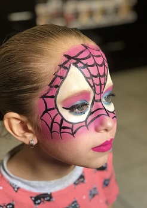

Představ si to: dítě přijde jako Pepíček a odchází jako tygr, princezna nebo vesmírný ninja. Co se stalo? No přece kouzlo zvané malování na obličej! Barevné štětce, třpytky, trochu trpělivosti (hlavně ze strany rodičů) a bum – kouzlo je na světě.
A co děti chtějí dneska nejvíc? Co je rozesměje, nadchne a přiměje stát ve frontě u face painterky i 20 minut (což je v dětském čase věčnost)? Tady to máš – nejžhavější trendy a nejoblíbenější motivy, co teď frčí mezi malými rošťáky i vílami s copánky.
1. TYGŘÍK, CO ŘVE A ROZTOMILE VRNÍ
Je jedno, jestli mu jsou tři nebo devět – jakmile se začne malovat čumáček a pruhy, víš, že máš doma šelmu. Tygří motiv je nadčasová klasika. Stačí oranžová barva, pár černých čar a dítě se mění v obyvatele džungle (nebo dětského koutku).
Hit roku? Neonový tygr, co ve tmě svítí jak diskokoule.
2. JEDNOROŽEC, VÍLA A TŘPYTKY VŠUDE
„Chci duhovou hřívu, růžový čumáček a hodně třpytek!“ – pokud slyšíš tohle, jsi v zóně jednorožců. A pozor – kluci se taky nebojí růžové!
Trend alert: Perleťové barvy, pastelové přechody a malý roh na čelo.

3. SPIDERMAN (A SPIDERHOLKY, JASNĚ)
Když je potřeba zachránit oslavence nebo utéct před dortem s rozinkami, volá se Spidey. Červená, černá pavučina a ty ikonické oči… klasika, která nikdy nezklame.
Novinka: Spider Gwen – růžovo-fialová verze pro superhrdinky.
4. LEDOVÉ KRÁLOVNY (ANO, POŘÁD JE TU ELSA)
Ledové království má u dětí delší výdrž než školní aktovka. Malují se vločky, ledové efekty a samozřejmě – třpytky.
TOP motiv: „Frozen eyes“ – modré víčka s hvězdičkami a stříbrný detail na tvář.

5. DINOSAUŘI! RRRRRAWRRR!
Dino je vždycky dobrý nápad. Děti se mění v T-Rexe, stegosaury nebo zelené příšerky s ostny a velkým řevem.
Novinka: 3D efekt pomocí stínování – šupiny opravdu vyskakují.
6. KOČIČKY, PEJSCI, ZAJÍČCI… ZVÍŘECÍ KOMANDO
Malý růžový čumáček, černé fousky, ouška na čele a z děťátka je roztomilý chlupáč.
In teď: Kawaii styl – velké oči, pastelové odstíny a tvářička jak z anime.
7. GALAXIE, HVĚZDY A MALÍ MIMOZEMŠŤÁCI
Vesmírná tematika roste jako počet dětí ve frontě na cukrovou vatu. A nejlepší? Ty barvy se krásně fotí!
TIP: Přidej UV barvu a dítě ti září i na nočním karnevalu.

BONUS: ABSTRAKTNÍ MALBA PRO UMĚLECKÉ DUŠE
Geometrické tvary, barevné tahy, symboly… Tohle není face painting. Tohle je tvář jako plátno!
Na co se těšit v roce 2025?
- Bio třpytky a eco-friendly barvy
- Metalické efekty
- Airbrush techniky
- Neonky a UV barvy
ZÁVĚREM: Když má dítě namalovaný čumáček, svět je v pořádku
Face painting není jen „malování na obličej“. Je to zážitek. Je to proměna. Ať už malujete tygra, princeznu, nebo abstraktního robodina, jedno je jisté: s úsměvem na tváři a trochou barvy na nose je svět o dost veselejší.
Zpět na hlavní stránku